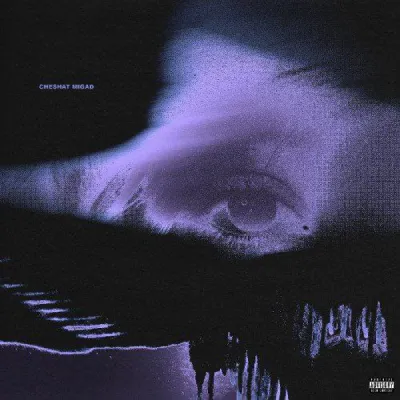

🎵 لیست آهنگها
cartier

Bang Bang Song By Mehyad

نگاهی بنداز به کاورهایی که پشت هر آهنگ یه داستان دارن...
Bang Bang Song By Mehyad
موزیک فقط صدا نیست. موزیک یه زبان دیگهست. زبانی که وقتی کلمات کم میارن، شروع میشه. توی دنیایی که همه دارن حرف میزنن، موزیک اون چیزیه که گوش میده. Parhamify ساخته شده برای لحظههایی که نمیتونی حرف بزنی، ولی میخوای شنیده بشی. برای شبهایی که سکوت سنگینتر از هر فریادیه، برای صبحهایی که یه ضربآهنگ میتونه روزتو بسازه. اینجا هر آهنگ یه داستانه. نه فقط از نظر ملودی، بلکه از نظر حس، خاطره، و روایتی که پشتشه. ما باور داریم که موزیک میتونه آدمها رو به هم نزدیک کنه، حتی وقتی کیلومترها از هم دورن. میتونه یه خاطرهی فراموششده رو زنده کنه، یا یه حس جدید رو بهت بده که تا حالا تجربه نکردی. Parhamify یه سایت نیست. یه تجربهست. یه سفره به دنیای صداهایی که با قلب ساخته شدن. پس چشماتو ببند، یه آهنگ انتخاب کن، و بذار صداها باهات حرف بزنن...
موزیک فقط صدا نیست. موزیک یه زبان بیکلامه، یه ترجمهی مستقیم از احساسات به فرکانسهایی که قلب رو میلرزونن. وقتی دنیا پر از حرفهای تکراریه، موزیک اون چیزیه که تازه حرف میزنه. وقتی نمیتونی بگی "دلم گرفته"، یه آهنگ هست که دقیقاً همون حس رو فریاد میزنه، بینیاز به کلمه. Parhamify ساخته شده برای همین لحظهها. لحظههایی که نمیخوای توضیح بدی، فقط میخوای شنیده بشی. این سایت یه پلیر نیست. یه تجربهست. یه سفره به دنیایی که توش هر آهنگ یه خاطرهست، یه داستانه، یه لحظهی واقعی از یه زندگی واقعی. ما باور داریم که موزیک میتونه آدمها رو به هم نزدیک کنه، حتی وقتی کیلومترها از هم دورن. میتونه یه شب تاریک رو روشن کنه، یه دل شکسته رو آروم کنه، یه ذهن خسته رو دوباره زنده کنه. توی Parhamify، هر آهنگ با دقت انتخاب شده. نه بر اساس ترند، بلکه بر اساس حس. هر کاور، هر جمله، هر داستانی که کنارش میبینی، یه تکه از یه روح دیگهست. ما نمیخوایم فقط گوش بدی. میخوایم حس کنی. میخوایم وقتی یه آهنگ پخش میشه، یه خاطره توی ذهنت روشن بشه. شاید یه شب بارونی، شاید یه پیام نخونده، شاید یه لحظهی سکوت که پر از حرف بود. اینجا، صداها حرف میزنن. اینجا، سکوتها موزیک میشن. اینجا، تو تنها نیستی. Parhamify یه سایت نیست. یه دعوت به شنیدن چیزیه که همیشه توی قلبت بوده ولی هیچوقت نتونستی بگی. پس چشماتو ببند، یه آهنگ انتخاب کن، و بذار صداها باهات حرف بزنن. چون گاهی، یه موزیک میتونه کاری کنه که هزار جمله نمیتونن.
شبها یه جنس دیگه دارن. وقتی همهچی آرومه، ذهن پر از صدا میشه. این آهنگها برای لحظههاییان که چراغا خاموشه، ولی قلب روشنه. بذار این صداها همراهت باشن توی سکوت شب.
دلتنگی یه حس خاصه. نه غم کامله، نه شادی ناقص. یه جایی بین خاطره و آرزو گیر کرده. این آهنگها برای لحظههاییان که دلت یه نفر رو صدا میزنه، حتی اگه خودش ندونه.
گاهی فقط میخوای ذهنت آروم باشه. نه حواسپرتی، نه هیجان. فقط یه ریتم ثابت، یه صدای نرم، یه فضای ذهنی خلوت. این آهنگها برای لحظههاییان که میخوای عمیق فکر کنی، بنویسی، یا بسازی.
اگه نظری، پیشنهادی یا حتی یه آهنگ خاص داری که دوست داری اضافه بشه، خوشحال میشیم بشنویمش!